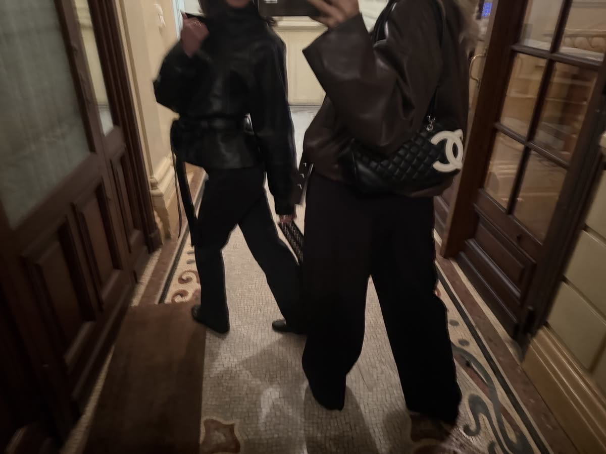
как я набрала 90 000 аудитории за 7 месяцев
что делать в декабре, чтобы набрать аудиторию
Всем привет!
В этой статье я решила собрать весь свой свежий опыт, который помог мне после двухлетнего застоя вернуться в блог, найти свои смыслы и прийти к 98 000 аудитории за 7 месяцев! также как приятный бонус вырос мой Telegram до 30 000, и YouTube до 2 000 с нуля.
И самое главное: это не основная моя деятельность. Я развиваю проекты в партнерствах — и при этом я успеваю и с огромным удовольствием веду блог
Все эти два года застоя я каждый день хотела проявляться, каждый день хотела что-то выкладывать, снимать reels — но я включала камеру и буквально не понимала, что мне говорить. У меня было много сопротивления, саботажа. В какой-то момент я решила, что это вообще не для меня: «может, я слишком умная для этих ваших рилс?»)) да, порой даже думала так..)
И в какой-то момент я просто от этого устала. Я поняла, что должна найти подход и взять ответственность за то, чтобы наконец-то делиться своим опытом, проявляться и выходить из тени
В том, о чем я буду говорить в этой статье, нет вообще ничего сложного, и даже кому-то может показаться, что я что-то недоговариваю. Но здесь я действительно рассказываю то, что делаю сама.
Более того, я писала подобную статью, когда у меня было 20 000 аудитории. И сейчас, когда я дошла уже до 98 000, у меня произошел невероятный инсайт:
Я не сделала ничего нового.
То есть все, что я рассказывала в начале (когда в первый месяц пришла к 20.000 аудитории), я продолжала делать все эти семь месяцев. Поэтому я очень рекомендую сразу настроить себя на то, что здесь нет ничего сложного, и, самое главное, просто пойти и сделать первые действия.
Сейчас вы начнете везде в Instagram слышать про «золотую неделю», про то, что сейчас начнется волшебное время для набора аудитории.
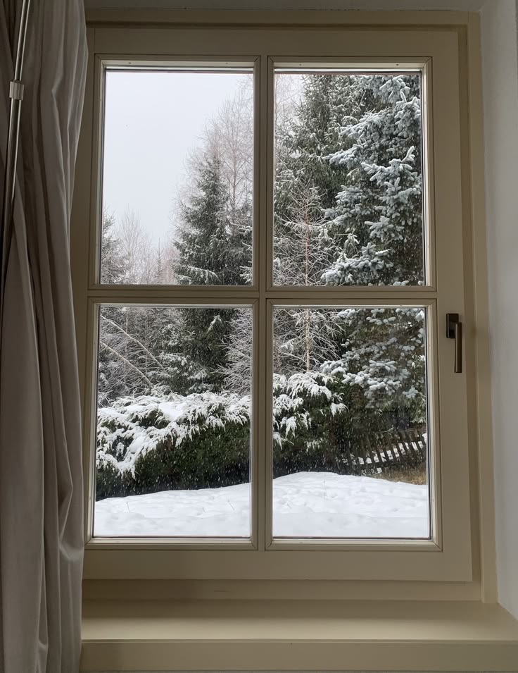
Очень много будет контента о том, что в январе на новогодних праздниках можно очень сильно вырастить блог, и мне хочется здесь помочь вам к этому подготовиться, потому что сама «золотая неделя» и этот прекрасный период декабря и января — они не являются какой-то волшебной палочкой. И три года подряд я пыталась вырастить свой блог в «золотую неделю», выкладывала контент в новогодние праздники каждый день, но, конечно же, блог не рос.
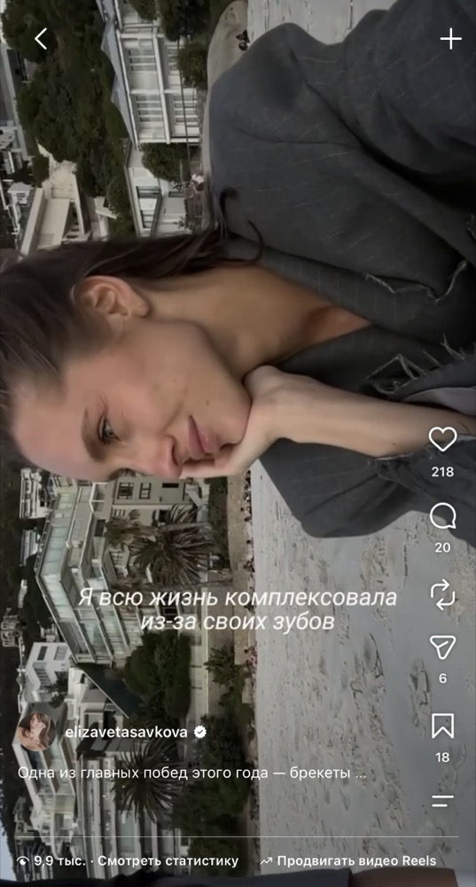
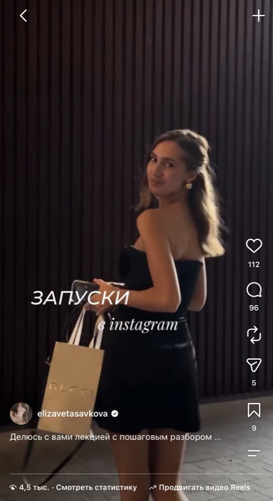
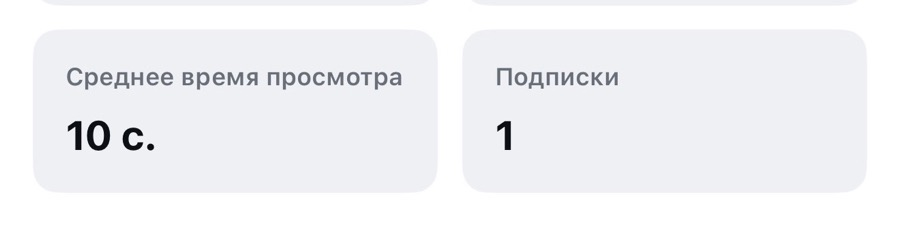
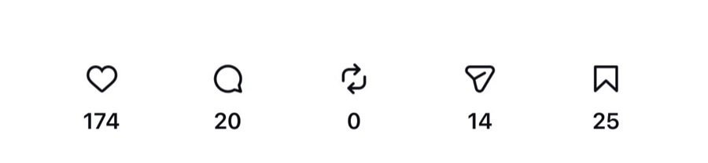
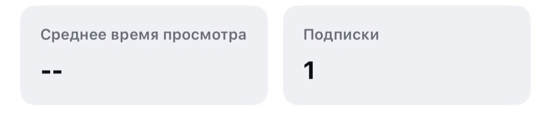
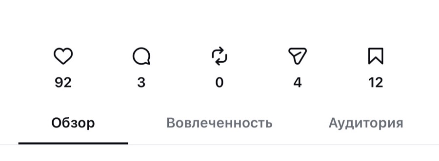
Почему? Что вообще такое «золотая неделя»? Это период, когда у людей на праздниках больше свободного времени, они смотрят контент и больше сидят в социальных сетях. И да, это время благоприятно для роста, но если для этого вы заложили фундамент, если вы уже нашли свой формат, свои темы, уже начали вести блог, снимать контент регулярно, к вам уже начали приходить новые люди.
Сама по себе «золотая неделя» не поможет, если до нее ничего не делать и рассчитывать, что за это время каким-то чудом придет аудитория.
Поэтому в этой статье я поделюсь своим подходом, который помог мне и, я уверена, поможет вам сделать блог и рилс абсолютно естественным процессом и уже сейчас, за ближайший месяц до той самой «золотой недели», раскачать блог, сделать этот процесс комфортным для себя, чтобы в период праздников действительно еще активнее вырасти. Поэтому давайте начинать.
Мой подход к блогу — это максимально упрощать и делать только то, что нравится. Мне кажется, это главное
Я знаю, что многие говорят о том, что блог — это работа, что нужно к нему отнестись серьезно, и тогда он будет расти. Но мой опыт показал совсем иное. И мой блог начал расти, когда я начала говорить о том, что мне нравится, снимать так, как мне нравится, и делать это из своего собственного интереса, а не потому, что я чувствовала фомо от того, что не веду блог.
При этом мне не нужно высасывать из пальца какие-то темы, стараться быть интересной, быть в тренде или делать то, что делает кто-то.
Мой подход к блогу дает возможность ничего не придумывать. У меня есть две-три темы, на которые мне естественным образом легко говорить, на которые всегда есть что сказать. Это темы, на которые я в обычной жизни разговариваю с друзьями, знакомыми, темы, которые меня зажигают
И то же самое с визуалом, с картинкой: она не подобрана по примеру кого-то, это картинка, которая нравится мне самой, от которой сама кайфую я)
И это главные принципы, которые мне кажется важным внедрить вам в первую очередь, чтобы блог начал расти.
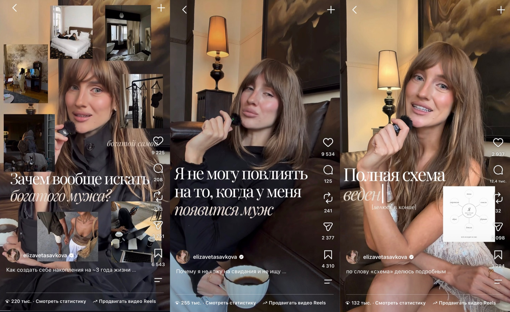
Например, весь мой контент, все мои рилс я снимаю практически всегда в одной и той же локации.
Я меняю локацию только если меняю город или страну, потому что я много путешествую. Для меня это очень просто и естественно. Нет задачи каждый раз удивлять аудиторию новой картинкой, новой невероятной локацией. Самый главный критерий — чтобы вам визуально самим нравилось и было комфортно. У кого-то это будет просто рилс, снятые дома, кто-то будет снимать, например, в кафе.
Первые несколько месяцев я все свои рилс снимала в кафе, в которое ходила каждый день. Перестала там снимать только по причине того, что уехала из этого города)) В каждой стране, в каждом городе я нахожу комфортную, удобную для себя локацию, в которой мне не составляет труда снимать и которая мне очень нравится визуально.
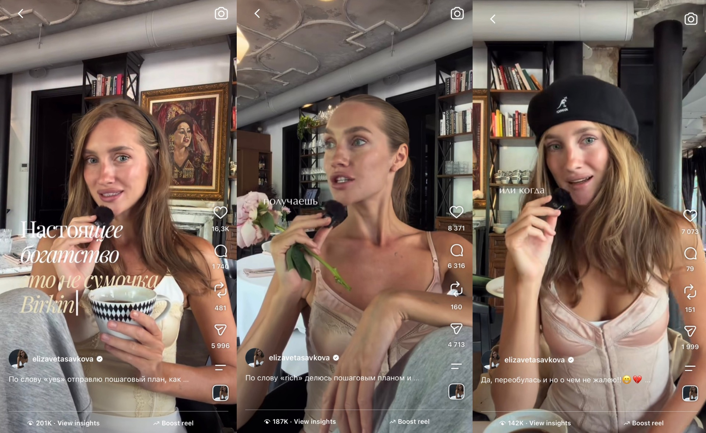
То есть съемка у меня всегда подстраивается под то, как мне удобно, а не как правильно или не как делает кто-то. И это то, что я рекомендую сделать вам. Вам не нужно создавать завышенную важность в съемке, делать так, как делает кто-то, если для вас это некомфортно. Возможно, вам удобно снимать дома, и это супер.
Кому-то удобно снимать, пока вы едете в машине, кому-то удобно снимать, прямо идя по улице. Кому-то будет комфортно также снимать в кафе, а кто-то в кафе снимать стесняется, потому что люди смотрят. не надо себя заставлять и напрягаться!!!! То, что кто-то снимает в кафе, не значит, что вам нужно так же)
Вы можете, например, снять студию, где за час без лишних глаз сможете поснимать, если по какой-то причине вам не хочется снимать дома. Например, я не снимаю дома просто потому, что дома у меня совсем другая энергия, и мне некомфортно снимать. И в этом нет ничего плохого, правильного или неправильного.
Я дома не снимаю, а кто-то, снимая дома, набирает десятки тысяч новой аудитории. Это вообще не влияет.
Все это можно объединить в одно - я развиваю свой блог по принципу маркетинга личности. Это когда в основе вашего блога, ваших смыслов, ваших видео стоите вы, ваша личность, то, что нравится и интересно вам, а не то, что «правильно», «в тренде» или «работает».
Давайте теперь по шагам разберемся, как внедрить этот подход вам в блог. И как уже в декабре вырасти, раскачать блог, увеличить охваты и аудиторию? Спойлер: декабрь для этого просто идеально подходит)
шаг 1.
Что значит энергетически заряженные темы?
Это темы, о которых вы говорите, о которых думаете; цели, к которым вы идёте; то, что вы сейчас изучаете, что вам больше всего интересно. То есть темы, которые так или иначе в вашей жизни сейчас очень проявлены — они вызывают у вас интерес. или это какой-то свежий опыт, который вы сейчас проживаете
Более того, это может быть вообще не связано с вашей экспертностью. Например, моим сильным ограничителем было то, что я думала: нужно снимать и рассказывать про запуски онлайн-проектов, про воронки продаж — потому что это моя экспертность, это то, что приносит мне деньги, причем уже много лет. Но мне не хотелось об этом говорить. И вот эта установка «нужно говорить только о своей экспертности» меня ограничивала
Это должно в первую очередь вас сейчас зажигать, должно быть интересно именно вам.
Я провела «брейншторм» и поняла, что тема, которая мне сейчас интересна, — это деньги. Даже не работа как таковая, а именно деньги. Мне очень интересна тема капитала: у меня есть советник по финансовой грамотности, по формированию капитала, я поставила себе большую финансовую цель, к которой иду. Естественно, эта тема стала темой номер один
Вторая тема, которую я для себя определила, — это женская реализация. Я с восемнадцати лет сама себя обеспечиваю, а с девятнадцати я уже миллионер. У меня очень хороший уровень жизни, и всё это я сделала самостоятельно. Более того, при этом я остаюсь, как я сама себя считываю, лёгкой, женственной — то есть я не становлюсь «бабой с яйцами». И это тоже стало одной из тем моего блога: именно женская составляющая, реализация по-женски
Я развиваю блог по принципу ролевой модели. Это не значит, что я учу людей, как жить. Это значит, что у каждого из нас есть что-то, в чем наш опыт может быть полезен, релевантен людям, в чем на нас хотят быть похожими. И на этом в том числе тоже можно строить блог
У каждой из вас тоже есть такая тема — нужно её определить. Их может быть одна, две, максимум три. Их не должно быть слишком много!!!
Если вы затрудняетесь с тем, чтобы найти тему, вот что вам может помочь — способы, как найти свою тему, хотя бы в начале пути (потом ее, конечно же, можно менять):
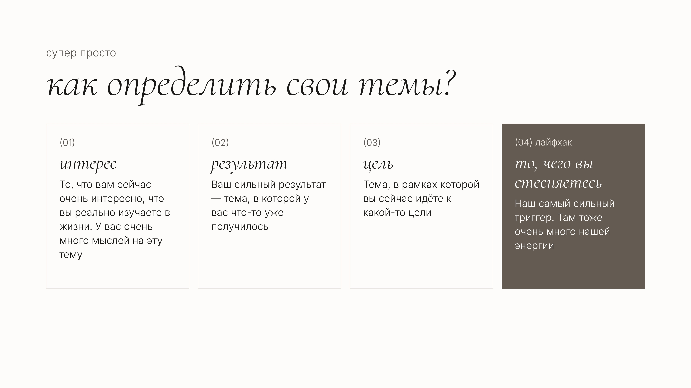
1Первое — цель
Тема, в рамках которой вы сейчас идёте к какой-то цели.
Я много говорю про финансы, потому что это цель, к которой я иду. Большого капитала у меня ещё нет, но мне это интересно, я это изучаю, и тема для меня очень объёмная
2Второе — результат
Ваш сильный результат — тема, в которой у вас что-то уже получилось.
Я много говорю про блог, потому что у меня в этом есть результат, и мне легко на эту тему говорить. Например, рилс о том, сколько аудитории я набрала и что мне в этом помогло
3Третье — то, чего вы стесняетесь
Наш самый сильный триггер. Там тоже очень много нашей энергии.
Главное правило блогинга: то, чего вы больше всего стесняетесь, — на этом ваш блог и выстрелит. Это может быть особенность, внешность, привычка, поведение, мысли
Раньше я стеснялась того, что определённые события в жизни заставили меня начать экономить и во многом себе отказывать. Мне начало казаться, что теперь я недостаточно крута, теперь меня никто не будет слушать. А по итогу я построила на этом блог и набрала 98 000 аудитории.
В нашем стеснении, загонах и переживаниях очень много энергии! их можно превратить в свою ОГРОМНУЮ силу))
шаг 2.
На каждую из этих тем я просто написала свои мысли и структурировала их в сценарии. И начала, грубо говоря, тестировать — абсолютно сняв любые ожидания. Я просто начала смотреть, какой отклик получают эти темы
перед тем, как снимать, мы всегда пишем текст (сценарий) заранее. Мы не просто болтаем на камеру)
да, возможно с опытом можно научиться записывать рилс в потоке, но это гораздо энергозатратнее и сильно менее эффективно💔
даже когда вы видите в инсте тренд на «яппинг» (просто свободное говорение на камеру) - знайте, что большинство такого контента записывается по заранее подготовленному тексту))
шаг 3
Первые несколько недель, когда вы только начинаете «раскачивать» блог, ваша задача — делиться тем, что вам интересно, говорить на темы, которые вам нравятся, исходя из того, что мы обсудили выше. И главное, по возможности делать это регулярно, потому что когда вы начнете выкладывать каждый день, а именно это помогло мне сильно вырастить свой блог, вы увидите, какой контент собирает больше отклика, на какую тему вам самим легче и естественнее говорить, на какую тему больше реагирует ваша аудитория.
И ваша задача — масштабировать именно то, что работает лучше всего. Больше внимания давать тем темам, которые у вас уже набирают больше отклика (охвата, новой аудитории), раскручивать их с разных сторон. Развивать свои разные мысли, убеждения в рамках этой темы, то есть «топить» в то, что лучше всего у вас работает. Именно так вы сможете создать сильную ассоциацию с вами.
То есть у людей будет понимание, зачем заходить в ваш блог, о чем вы там говорите, какой контент от вас ожидать и на какие темы. И вам самим будет легче, потому что на какое-то время вы сможете сфокусироваться на одной или двух темах, которые у вас лучше всего сработали, и вам не нужно будет каждый раз гадать, о чем же говорить сегодня
главное правило в блоге должна быть энергия
Рилс никогда не будет виральным, если в нём нет энергии. А энергии в нём не будет, если для вас это очень сложный, долгий процесс — как рабочая задача. Информация как таковая никому не нужна. Людям нужна энергия. Ваша — как бы это ни звучало.
Поэтому рилс нужно снимать легко. Поэтому я и говорю, что уделяю этому минут десять-пятнадцать в день. Как это сделать?
как снимать разговорный контент
1Первое — выбрать формат и локацию
Как вам снимать легче всего? Какая картинка вам нравится? Это иллюзия — думать, что каждый раз должна быть какая-то новая, невероятно цепляющая картинка. Практически все мои рилс сняты в одном и том же месте, в одной и той же позе, в абсолютно одинаковом формате и подаче. Не нужно ничего сочинять и тратить энергию на поиск невероятных локаций. Найдите одно место, где вам нравится, как вы выглядите, где вам комфортно и удобно, — то, что вы можете снимать регулярно.
В идеале это вообще ваша квартира или какое-то любимое место. Снимайте там
2Второе — сценарий, текст.
Я никогда не сочиняю на ходу: это забирает очень много энергии и ресурса, так делать контент сложно. Раньше я пыталась именно так — сейчас я прописываю текст заранее. Это тоже занимает всего несколько минут, потому что у меня уже есть своя структура, по которой я составляю любой свой рилс, любой свой материал. Я оттачиваю эту структуру уже больше полугода
Эту структуру я передаю в своём закрытом клубе по блогу и личному бренду «Секрет». Здесь каждый месяц мы работаем над вашим блогом, личным брендом и финансовыми результатами. Задача первого месяца — найти ваши темы для блога и формат и научиться писать сценарии, которые приносят аудиторию. И всё это на основе вас и вашего личного бренда.
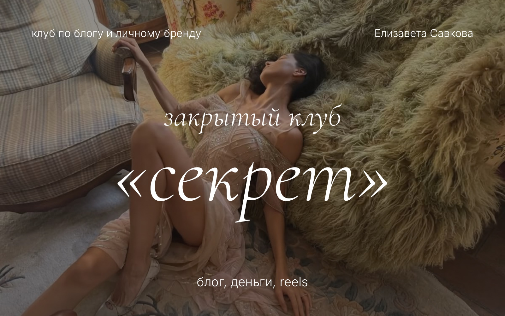
Сейчас вы уже можете присоединиться, если вам близок мой подход.
Старт первого месяца клуба — 5 декабря. Я вам первым даю ссылку, ее еще нет нигде в открытом доступе. Кликайте)
присоединиться к клубу «Секрет»Конечно же, рилс — это лишь верхушка айсберга)) Я не претендую на то, чтобы становиться экспертом по рилс и учить каким-то секретным формулам. Их нет — их просто не существует
Главный секрет, если его вообще можно так назвать, — это актуальный подход к маркетингу.
Маркетинг личности — это именно то, за счёт чего контент летит. Не из-за какой-то секретной формулы или секретного триггера, а из-за того, что вы очень чётко умеете преподносить себя и свой подход в социальных сетях.
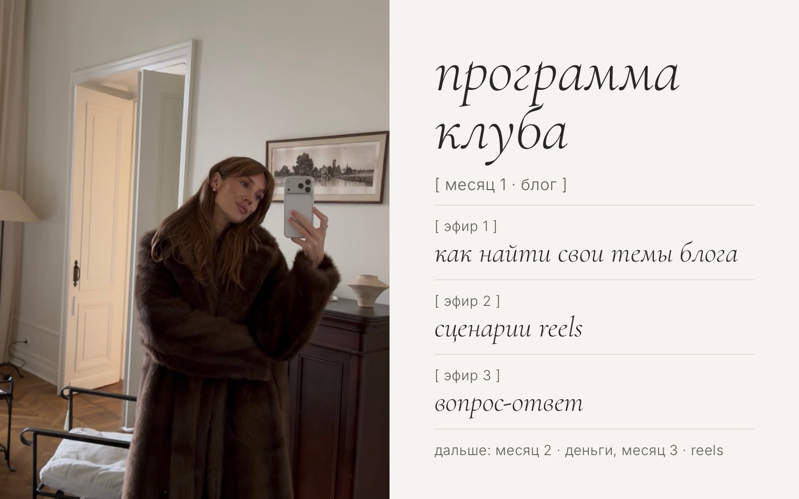
Это мы и разбираем в клубе «Секрет»: каждый месяц новая тема — глобальная цель развития своего блога и личного бренда.
Я приглашаю вас разобраться в этом вместе со мной — и с огромным удовольствием передам вам свой опыт)
Какой контент делать
Совсем скоро приближается декабрь, и это прекрасный месяц для того, чтобы раскачать свой блог, набрать новую аудиторию и вырастить охваты.
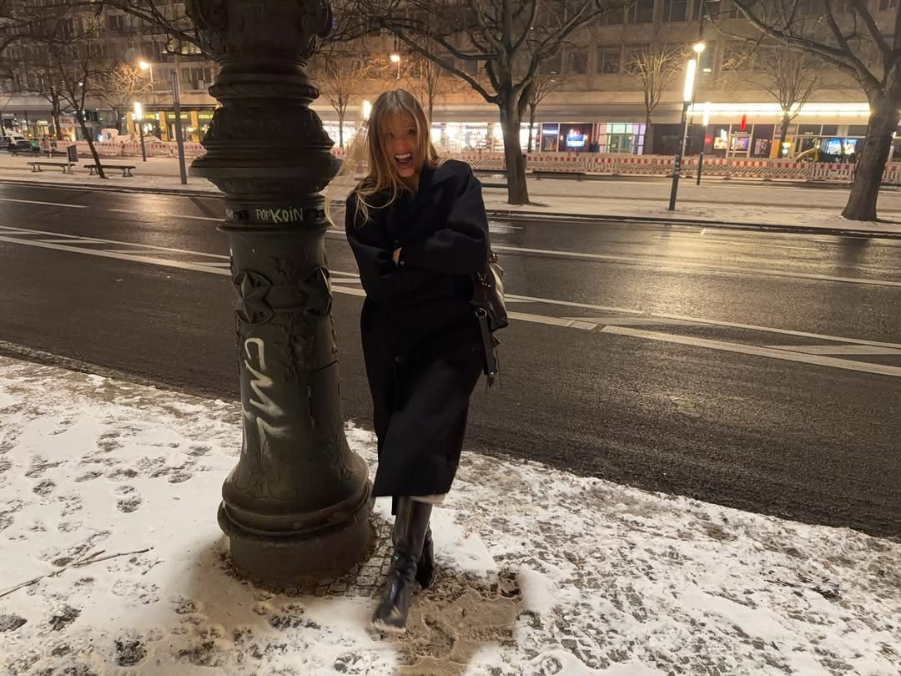
Чем декабрь так хорош? Этот месяц особенно наполнен настроением, энергией, целями, планами, желаниями. Если контент попадает под это настроение, он очень круто работает.
То же самое касается января. Я уверена, что вы все слышали уже много раз про «золотую неделю» контента. несколько лет подряд я пыталась развивать блог за счет «золотой недели», но, как показывает практика, если вы не понимаете, о чем говорить, не нашли свои темы и не ведете блог регулярно, «золотая неделя» ни в чем вам не поможет. За три года я ни разу не набрала аудиторию в этот период...
Но!!!!! если уже сейчас, в декабре, сделать для себя блог регулярным процессом, который вам нравится, уже сейчас начать набирать аудиторию, то, конечно же, в конце декабря, в январе можно еще сильнее вырасти)
Наступление зимы, Новый год — это естественный инфоповод, то есть инфоповод, который естественным образом мы можем использовать в своем контенте.
Любые праздники, смена сезонов и так далее являются естественными инфоповодами. И сейчас самый главный из них — это, конечно же, зима и Новый год. Соответственно, любой контент, который мы делаем в рамках наших тем, очень естественно можно привязывать к этим смыслам.
Какой контент я бы рекомендовала делать в декабре, если вы хотите за этот месяц раскачать свой блог, набрать новую аудиторию и заложить классный фундамент на январь?
Первое — это контент, посвященный завершению года. Все, что связано с подведением итогов, с правильным завершением года.
Причем эту тему вы можете подводить под любую свою тему. Например, я буду снимать контент о том, как в декабре вырастить блог, потому что это одна из тем моего блога. Или как в декабре распоряжаться своими финансами, чтобы не потратить лишнего, а больше накопить. Это тоже тема моего блога)
Также контент, нацеленный на зиму в целом - 3 месяца этого периода. Например, сейчас завирусился тренд, который называется Winter Arc. Это тренд о том, что за три месяца зимы можно полностью изменить свою жизнь, и многие снимают видео на эту тему. И это действительно очень классная тема для того, чтобы ее сейчас использовать, неважно, о чем вы ведете блог - этот "челлендж" можно адаптировать под вашу тему
Также будет круто работать контент, приуроченный к Новому году, в рамках ваших тем. Например, как успеть прийти в идеальную форму до Нового года, если ваш блог о питании или спорте, или как набрать несколько тысяч новой аудитории за декабрь, если ваш блог посвящен блогу или рилсам, про актуальные стильные образы на зиму или на Новый год, если, например, вы стилист, и так далее. Любую тему блога можно приурочить к зиме и Новому году.
В том числе первый месяц моего клуба «Секрет» будет посвящен тому, как набирать аудиторию именно в декабре. Я на своем примере буду показывать, как именно писать сценарии рилсов, о чем говорить и как адаптировать все это под ваши блоги и под ваши темы.
Потому что очень важно не снимать просто все подряд в погоне за трендами, и даже несмотря на то, что зима и Новый год задают определенные тенденции в контенте, важно, чтобы то, что вы по итогу снимаете, было созвучно вам, вашим смыслам и масштабировало ваш личный бренд, а не просто приносило охваты.
Этим мы и будем заниматься в первый месяц клуба. Я вас приглашаю. Старт уже 5 декабря.
Весь мой подход стоит на одной простой вещи: быть богатой, счастливой и свободной девушкой — это легко.
Легко вести блог, легко продавать, легко проявляться — когда вы делаете это из себя, а не из попытки кому-то понравиться. Потому что, когда ты пытаешься понравиться всем, ты становишься неинтересным никому💔
Перестаньте усложнять. Найдите свои темы, свои смыслы, своё место, где вам легко. А если хотите сделать это рядом со мной, по моей структуре, — это и есть мой закрытый клуб по блогу и личному бренду «Секрет»)
присоединиться к клубу «Секрет»Буду рада поделиться с вами своим опытом)